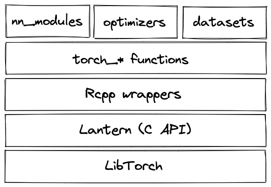

torch! (And luz!)torchtorch is an R-native framework for fast array computation with automatic differentiation and rich neural-network functionality.

luzWhat keras is to tensorflow – a high-level API streamlining and instrumenting the training process – luz is to torch. While everything can be accomplished with torch alone, luz
provides a keras-like, declarative interface to the training process
removes boilerplate code
keeps track of metrics commonly used in data science, and allows you to define your own
provides a set of ready-to-use callbacks to control training, save model state, and more
offers a convenient interface for defining your own callbacks
… and more!
Understand and use torch tensors and neural network modules; understand and apply automatic differentiation.
Use luz to train neural networks in a declarative way.
Get started with time-series forecasting in torch.
To follow this tutorial, you will need to install the following packages:
torch tensors, modules, and autogradTensors can be created directly from R values using torch_tensor(). Optionally, we can define tensor attributes, including the data type, the device it lives on, and more.
Here we are creating one-dimensional tensors (vectors):
torch_tensor(1)
torch_tensor(1, dtype = torch_int())
torch_tensor(1, device = "cuda")
torch_tensor(c(1, 2, 3)) # float tensorTwo-dimensional tensors can be created from R matrices.
torch_tensor(matrix(1:9, ncol = 3)) # integer tensor
torch_tensor(matrix(1:9, ncol = 3))$to(dtype = torch_float()) # cast to float
torch_tensor(matrix(1:9, ncol = 3, byrow = TRUE))Higher-dimensional tensors can be created from R arrays, but normally it is easier to use bulk creation functions.
Multi-dimensional tensors following some defineable pattern are created passing in the desired dimensionality. A few examples (more exist):
torch_zeros(c(3, 3))
torch_rand(c(3, 3))Another often-used type of function is used specifying the desired range:
torch_arange(1, 9)
torch_logspace(start = 0.1, end = 1.0, steps = 5)Tensors are converted back to R using as.numeric(), as.matrix(), or as.array():
torch_tensor(2) %>% as.numeric()
torch_ones(c(2, 2)) %>% as.matrix()
torch_ones(c(2, 2, 2)) %>% as.array() A great number of operations can be performed on tensors. In general, there is a pair of function (not associated to any object) and corresponding method (“belonging” to a tensor instance) that do the same thing:
t1 <- torch_tensor(c(1, 2, 3))
t2 <- torch_tensor(c(1, 2, 3))
torch_add(t1, t2)
t1$add(t2)In both cases, the original tensors are not modified; a new object is created. Normally, you would just assign this to a new variable:
t3 <- t1$add(t2)
t1
t3In the few cases where you need to modify the original tensor, you can make use of the corresponding underscore variants:
t1$add_(t2)
t1Here are a few of the many matrix operations available. $mul() multiplies element-wise; $matmul() performs matrix multiplication; $dot() computes the dot product:
t1$mul(t2)
# both work (torch has no concept of row vs. column vector)
t1$matmul(t2)
t1$t()$matmul(t2)
t1$dot(t2)You can see that torch makes no distinction between row and column vectors. Above, $t() transposes the vector t1, but the matrix multiplication will work without.
Often, you will need to reshape a tensor. Among the most common operations are $squeeze() and $unsqueeze(). The former adds removes a singleton dimension at the specified position (where singleton means the dimension is of length 1):
t1 <- torch_randn(c(1, 2, 3, 4))
t1
t1$squeeze(1)The latter, in contrast, adds a singleton dimension:
t1$unsqueeze(4)This only works for singleton dimensions. $view() works for arbitrary reshaping, provided the number of elements allows for it. t1 , above, has 24 values, which could as well be arranged as 6x4 or 1x24:
t1$view(c(6, 4))
t1$view(24)$view() does not actually create a separate, re-shaped instance of its input tensor; instead, it has the new variable refer to the same location in memory, and just stores some metadata that tell torch how the respective bytes should be read. There are cases when $view() cannot be used; in this case, you can always use $reshape() instead. In contrast to $view(), $reshape() will make a physical copy if necessary.
Indexing in torch is 1-based, just like in R overall. And just like in R, singleton dimensions will be dropped – unless you specify drop = FALSE:
t1
t1[ , 1, , ]
t1[ , 1, , , drop = FALSE]Ranges of values (“slices”) can be accessed using the semicolon:
t1[1, 1, 1:2, ]
t1[1, 1, 1:2, , drop = FALSE]A shortcut that does not exist in R (where the same syntax has different semantics), index -1 is used to refer to the last element in a dimension:
t2 <- torch_tensor(1:17)
t2[-1] In torch, tensors may be broadcasted. The principle is the same as when, in R, we add a scalar to every element in a vector. But it goes farther than that. We don’t have the time to explain the rules in detail, but show a few examples as well as state the rules, for you to return at a later time.
Here, we “add” a matrix and a vector, resulting in the vector being added to every row of the matrix. This is possible only because t2 has a singleton dimension in front.
t1 <- torch_randn(c(3,5))
t2 <- torch_randn(c(1,5))
t1$add(t2)This example looks similar, but it involves an additional operation from torch’s side: t2 is first virtually expanded to size 1x5 (a singleton dimension is added in front). Then, things go like above.
t1 <- torch_randn(c(3,5))
t2 <- torch_randn(c(5))
t1$add(t2)As a final example, here we see both virtual addition of a singleton dimension (to t1) and the “reusability” of singleton dimensions shown in the first example. The latter idea is used twice, for t1 as well as t2.
# 1 We align array shapes, starting from the right.
# Example
# t1, shape: 8 1 6 1
# t2, shape: 7 1 5
# 2 Starting to look from the right, the sizes along aligned axes either have to match exactly,
# or one of them has to be equal to 1.
# In the latter case, the 1-dimensional tensor is broadcast to the larger one.
# Example: this happens in the last (for t1) as well as the second-from-last dimension (for t2)
# t1, shape: 8 1 6 5
# t2, shape: 7 6 5
# 3 If on the left, one of the arrays has an additional axis (or more than one),
# the other is virtually expanded to have a size of 1 in that place.
# Then, broadcasting will happen as stated in (2).
# Example: this happens in t1’s leftmost dimension. First, there is a virtual expansion
# t1, shape: 8 1 6 1
# t2, shape: 1 7 1 5
# and then, broadcasting happens:
# t1, shape: 8 1 6 1
# t2, shape: 8 7 1 5In the following exercises, try translating the R code into equivalent operations using torch.
# a matrix
m1 <- matrix(1:32, ncol = 8, byrow = TRUE)
# really a vector
m2 <- matrix(1:8, ncol = 1)
m1 [,1] [,2] [,3] [,4] [,5] [,6] [,7] [,8]
[1,] 1 2 3 4 5 6 7 8
[2,] 9 10 11 12 13 14 15 16
[3,] 17 18 19 20 21 22 23 24
[4,] 25 26 27 28 29 30 31 32m2 [,1]
[1,] 1
[2,] 2
[3,] 3
[4,] 4
[5,] 5
[6,] 6
[7,] 7
[8,] 8t1 <- torch_tensor(matrix(1:32, ncol = 8, byrow = TRUE))
t2 <- torch_tensor(1:8)
t1
t2(m1 %*% m2)^2 %>% sum() %>% sqrt()[1] 1425.729t1$matmul(t2)$square()$sum()$to(dtype = torch_float())$sqrt()[Note how we need to cast to float in order to be able to call torch_sqrt().]
m1 by the vector m2 (element-wise):m1 * rbind(t(m2), t(m2), t(m2), t(m2)) [,1] [,2] [,3] [,4] [,5] [,6] [,7] [,8]
[1,] 1 4 9 16 25 36 49 64
[2,] 9 20 33 48 65 84 105 128
[3,] 17 36 57 80 105 132 161 192
[4,] 25 52 81 112 145 180 217 256t1 * t2[Note how broadcasting takes care of the duplication for us. Also, note how no transposition is needed, as torch has no concept of row vectors vs. column vectors.]
m1, and compute column sums. (This should yield 4 values.)t(m1) %>% apply(2, sum)[1] 36 100 164 228t1$t()$sum(dim = 1)[Note how applying the sum over dimension 1 (not 2) collapses the rows. Try to view it like this: Given an index into the dimensions, in R, we think “group by”. In torch, we think “collapse”.]
m1 , subtracting the mean and dividing by the standard deviation.(m1 - mean(m1)) / sd(m1) [,1] [,2] [,3] [,4] [,5] [,6]
[1,] -1.65230555 -1.5457052 -1.4391048 -1.3325045 -1.2259041 -1.1193038
[2,] -0.79950269 -0.6929023 -0.5863020 -0.4797016 -0.3731013 -0.2665009
[3,] 0.05330018 0.1599005 0.2665009 0.3731013 0.4797016 0.5863020
[4,] 0.90610304 1.0127034 1.1193038 1.2259041 1.3325045 1.4391048
[,7] [,8]
[1,] -1.0127034 -0.90610304
[2,] -0.1599005 -0.05330018
[3,] 0.6929023 0.79950269
[4,] 1.5457052 1.65230555t1 <- t1$to(dtype = torch_float())
(t1 - t1$mean()) / t1$std()Just like torch_sum(), torch_mean() and torch_std() need their input to be of type float.
torch autograd provides automatic differentiation for operations executed on tensors. For this to happen, the “source” (or “leaf”, as torch calls it) tensor – the one with respect to which we’d like derivatives computed – needs to be created with requires_grad = TRUE. Let’s call it a:
a <- torch_tensor(matrix(1:4, ncol = 2, byrow = TRUE), dtype = torch_float(), requires_grad = TRUE)In this example, c, the output, depends on a via b:
b <- a$mul(2)
c <- b$sum()So far, no derivatives have been computed yet. But torch knows what to do should we ask it to. More precisely, it knows the concrete operations it’ll have to compute the derivatives for:
c$grad_fn
b$grad_fnTo actually have them computed, call $backward() on the output tensor:
c$backward()Now the gradient of c with respect to a can be found in a’s $grad field.
a$gradWhen we’re updating a “leaf” tensor, for example in optimization, we don’t want torch to record that operation for later computation of derivatives. In these cases, we need to tell it to exempt the operation in question from the process:
with_no_grad( {
a$sub_(0.1 * a$grad)
})
aWe can use autograd to minimize a function. We define a parameter to hold \(\mathbf{x}\). Then, in a loop, we evaluate the function at the current \(\mathbf{x}\), compute the gradient, and subtract a fraction of the gradient from \(\mathbf{x}\).
# function to minimize
f <- function(x) x^2 - 7
# we start from x = 11
param <- torch_tensor(11, requires_grad = TRUE)
# learning rate: fraction of gradient to subtract
lr <- 0.1
for (i in 1:num_iterations) {
# call function on current parameter value
# compute gradient of value w.r.t. parameter
# update parameter
}In the exercise, you’re asked to fill in the missing pieces.
Fill in the lines marked “TBD”. When you have the code running, experiment with the learning rate and compare the results. What is a good learning rate for this problem?
# function to minimize
f <- function(x) x^2 - 7
# we start from x = 11
param <- torch_tensor(11, requires_grad = TRUE)
# learning rate: fraction of gradient to subtract
lr <- 0.1
for (i in 1:10) {
cat("Iteration: ", i, "\n")
# call function with current parameter
value <- 777 # TBD
cat("Value is: ", as.numeric(value), "\n")
# compute gradient of value w.r.t. parameter
# TBD
# uncomment the following line when ready
# cat("Gradient is: ", as.matrix(param$grad), "\n")
# update parameter
# wrap in with_no_grad
with_no_grad({
# subtract a fraction of gradient from param
# TBD
# zero out on every iteration (would accumulate otherwise)
# TBD
})
cat("After update: Param is: ", as.matrix(param), "\n\n")
if (abs(-7 - as.numeric(value)) < 0.00005) break
}Iteration: 1
Value is: 777
After update: Param is: 11
Iteration: 2
Value is: 777
After update: Param is: 11
Iteration: 3
Value is: 777
After update: Param is: 11
Iteration: 4
Value is: 777
After update: Param is: 11
Iteration: 5
Value is: 777
After update: Param is: 11
Iteration: 6
Value is: 777
After update: Param is: 11
Iteration: 7
Value is: 777
After update: Param is: 11
Iteration: 8
Value is: 777
After update: Param is: 11
Iteration: 9
Value is: 777
After update: Param is: 11
Iteration: 10
Value is: 777
After update: Param is: 11 # function to minimize
f <- function(x) x^2 - 7
# we start from x = 11
param <- torch_tensor(11, requires_grad = TRUE)
# learning rate: fraction of gradient to subtract
lr <- 0.5
for (i in 1:10) {
cat("Iteration: ", i, "\n")
value <- f(param)
cat("Value is: ", as.numeric(value), "\n")
# compute gradient of value w.r.t. parameter
value$backward()
cat("Gradient is: ", as.matrix(param$grad), "\n")
# update
with_no_grad({
param$sub_(lr * param$grad)
# zero out on every iteration (would accumulate otherwise)
param$grad$zero_()
})
cat("After update: Param is: ", as.matrix(param), "\n\n")
if (abs(-7 - as.numeric(value)) < 0.00005) break
}While everything can be done with tensors and autograd alone, coding a large neural network that way would be a pretty cumbersome task. Luckily, doing so is not necessary. For one, torch provides a rich set of neural network modules that hide away layer logic; and secondly, its optimizers encapsulate established optimization algorithms known for their efficiency in neural-network settings.
torch uses the term module for individual layers (e.g., linear layer, convolutional layer …) as well as models, a.k.a. neural networks. The logic here is that modules are composable; a model/module is nothing but a composition of smaller modules, which again may contain yet smaller modules, etc.
Here is an affine transformation, coded manually:
# input data
x <- torch_randn(c(7,2))
# weights
w <- torch_tensor(c(0.1, 0.1), requires_grad = TRUE)
# bias
b <- torch_tensor(0.5, requires_grad = TRUE)
x$matmul(w) + b We can achieve the same using a linear module:
l <- nn_linear(in_features = 2, out_features = 1)
l(x)The result is different from above, because there we defined the weight ourselves. By default, torch will initialize the weights uniformly, with values ranging between [-sqrt(num_features), sqrt(num_features)].
l$weight Just to prove the point, we can manually initialize the module’s weights:
nn_init_constant_(l$weight, 0.1)
nn_init_constant_(l$bias, 0.5)
l(x)With modules, we get automatic differentiation for free.
Assume we want to minimize the sum of the outputs.
loss <- l(x)$sum()
loss$grad_fnWe will still have to call $backward() to see actual derivatives being computed. Here they are still undefined:
l$weight$grad
l$bias$gradCalling $backward() …
loss$backward()
l$weight$grad
l$bias$gradMany more modules exist. Here is a tensor mimicking a 32x32 RGB image:
img <- torch_rand(c(1, 3, 32, 32))Now nn_conv2d() is used to create a convolutional layer, and its 3x3 filter is applied to the image:
conv <- nn_conv2d(in_channels = 3, out_channels = 1, kernel_size = 3, padding = 1)
conv(img)Another module commonly used in image processing is nn_max_pool2d() for spatial downsizing:
pool <- nn_max_pool2d(kernel_size = 2)
conv(img) %>% pool()In the third section of this tutorial, we will encounter modules common in time series processing.
To build a “model” from “layers” such as the ones we showed above, we can use nn_sequential(). Here is a model that has two linear layers, with between them a ReLU module (nn_relu()). ReLU stands for “Rectified Linear Unit”; its purpose is to introduce some nonlinearity to this otherwise linear model. (It does this by setting all negative values to zero.)
model <- nn_sequential(
nn_linear(2, 16),
nn_relu(),
nn_linear(16, 1)
)
model$parameters
model(x)You can also define your own modules. We’ll see examples of this in the second part.
Among the most commonly-used optimizers in deep learning are Adam (optim_adam()), RMSProp (optim_rmsprop()), and Stochastic Gradient Descent (SGD; optim_sgd()).
Here, we use optim_adam() to demonstrate their use.
# some toy data
x <- torch_tensor(c(1.2, 0.8, 0.7))
y <- torch_tensor(1)When an optimizer object is created, it needs to be told what to optimize – namely, the model’s parameters. Most optimizers also need to be passed the learning rate.
model <- nn_sequential(
nn_linear(3, 8),
nn_relu(),
nn_linear(8, 1)
)
optimizer <- optim_adam(model$parameters, lr = 0.01)We obtain a prediction:
prediction <- model(x)
predictionWe then use one of torch’s built-in loss functions to compute the loss (here, mean squared error):
loss <- nnf_mse_loss(prediction, y)
lossWe call $backward() on the loss to have gradients computed:
loss$backward()Now the gradients are known, but no changes have been made to the model’s parameters yet.
model$parametersCalling $step() on the optimizer will make those changes:
optimizer$step()model$parametersWhen actually training a network, we call the optimizer in a loop. We show an example of this next.
First, we create the training data.
# input dimensionality (number of input features)
d_in <- 3
# output dimensionality (number of predicted features)
d_out <- 1
# number of observations in training set
n <- 100
# create random data
x <- torch_randn(n, d_in)
y <- x[, 1, NULL] * 0.2 - x[, 2, NULL] * 1.3 - x[, 3, NULL] * 0.5 + torch_randn(n, 1)Then, we define the network.
# dimensionality of hidden layer
d_hidden <- 32
model <- nn_sequential(
nn_linear(d_in, d_hidden),
nn_relu(),
nn_linear(d_hidden, d_out)
)We create the optimizer:
learning_rate <- 0.08
# optimizer applies gradient updates for us
optimizer <- optim_adam(model$parameters, lr = learning_rate)And we ’re ready for the training loop. In a loop, we
obtain model predictions;
compute the loss;
propagate back the loss through the network and update the parameters.
Note how when optimizing in a loop, we need to zero out gradients on every iteration.
for (t in 1:200) {
### -------- Forward pass --------
y_pred <- model(x)
### -------- compute loss --------
# mean squared error loss
loss <- nnf_mse_loss(y_pred, y, reduction = "sum")
if (t %% 10 == 0)
cat("Epoch: ", t, " Loss: ", loss$item(), "\n")
### -------- Backpropagation --------
# Need to zero out the gradients before the backward pass, as they'd accumulate otherwise
optimizer$zero_grad()
# compute gradients
loss$backward()
# update weights
optimizer$step()
}While a lot more convenient than working with tensors only, this is still a pretty low-level way of training a neural network, and needs special attention to be devoted to particularities (like zeroing out the gradients). In part two, we’ll see how to train neural networks much more comfortably with luz.
Below, you find the above end-to-end code to train a neural network. Try experimenting with it a bit:
If you change the learning rate, what happens?
Try other optimizers, such as optim_sgd(). How does that affect training?
# input dimensionality (number of input features)
d_in <- 3
# output dimensionality (number of predicted features)
d_out <- 1
# number of observations in training set
n <- 100
# create random data
x <- torch_randn(n, d_in)
y <- x[, 1, NULL] * 0.2 - x[, 2, NULL] * 1.3 - x[, 3, NULL] * 0.5 + torch_randn(n, 1)
# dimensionality of hidden layer
d_hidden <- 32
model <- nn_sequential(
nn_linear(d_in, d_hidden),
nn_relu(),
nn_linear(d_hidden, d_out)
)
learning_rate <- 0.08
# optimizer applies gradient updates for us
optimizer <- optim_adam(model$parameters, lr = learning_rate)
for (t in 1:200) {
### -------- Forward pass --------
y_pred <- model(x)
### -------- compute loss --------
# mean squared error loss
loss <- nnf_mse_loss(y_pred, y, reduction = "sum")
if (t %% 10 == 0)
cat("Epoch: ", t, " Loss: ", loss$item(), "\n")
### -------- Backpropagation --------
# Need to zero out the gradients before the backward pass, as they'd accumulate otherwise
optimizer$zero_grad()
# compute gradients
loss$backward()
# update weights
optimizer$step()
}Epoch: 10 Loss: 98.00224
Epoch: 20 Loss: 83.34789
Epoch: 30 Loss: 73.32167
Epoch: 40 Loss: 63.78309
Epoch: 50 Loss: 56.94036
Epoch: 60 Loss: 57.7351
Epoch: 70 Loss: 50.0152
Epoch: 80 Loss: 44.02956
Epoch: 90 Loss: 40.27573
Epoch: 100 Loss: 38.44748
Epoch: 110 Loss: 35.70034
Epoch: 120 Loss: 35.81842
Epoch: 130 Loss: 34.5412
Epoch: 140 Loss: 31.31835
Epoch: 150 Loss: 28.56025
Epoch: 160 Loss: 27.58221
Epoch: 170 Loss: 26.65957
Epoch: 180 Loss: 26.27227
Epoch: 190 Loss: 26.4375
Epoch: 200 Loss: 26.03418 luzluz is a high-level API for torch that allows you to train neural networks in a declarative style.
With luz, the overall flow looks a lot like in keras:
You define a model.
You use setup() to configure it with a loss function, an optimizer, and a set of metrics.
You train it using fit(), passing in the training and (optionally) validation data, as well as the number of epochs to train for and a set of callbacks (both optional).
To introduce luz, we are going to do the “hello world” of deep learning: digit classification on the (in-)famous MNIST dataset. MNIST is available as part of the torchvision package.
In torch , data is fed to a network using datasets and dataloaders. Their respective responsibilities are:
dataset: Return a single training (or validation, or test) item (in supervised learning, a list of input and target). Optionally, take care of any pre-processing required.
dataloader: Feed the data to the model. Normally, this happens in batches of configurable size. Optionally, a dataloader may shuffle the data, and arrange for parallelization over a subset of available processors.
torchvision comes with a few image datasets, requestable via xxx_dataset(). They will be downloaded and prepared the first time they’re instantiated (unless the data exist already in the specified location).
Since we don’t really need the full MNIST dataset for this demonstration, we only prepare the test split (indicated by the line train = FALSE below). We’ll split it up manually into training and validation parts in a minute.
In the dataset constructor, the argument transform = serves to tell torch how the images should be pre-processed.
dir <- "~/Downloads/mnist"
ds <- mnist_dataset(
dir,
train = FALSE,
transform = function(x) {
x %>% transform_to_tensor()
}
)ds now has 10,000 image-label pairs:
length(ds)We can use indexing to inspect them:
ds[1]Using dataset_subset(), we divide those 10,000 pairs into training and validation sets:
train_id <- sample.int(length(ds), size = 0.7*length(ds))
train_ds <- dataset_subset(ds, indices = train_id)
valid_ds <- dataset_subset(ds, indices = which(!seq_along(ds) %in% train_id))Next, we create the respective dataloaders.
train_dl <- dataloader(train_ds, batch_size = 128, shuffle = TRUE)
valid_dl <- dataloader(valid_ds, batch_size = 128, shuffle = FALSE)With dataloaders, length() indicates the number of batches:
length(train_dl)
length(valid_dl)The model is a convolutional neural network that successively filters and downsizes its input, to finally arrive at a class prediction. There are ten types of digits (0-9), and for each digit, it will output a score for each of the ten possible labels.
In the definition of the model, note the parameter num_classes. In this example, there is no real need to parameterize the number of classes the model can work with; however, we’d like to show how with luz, you can keep the model definition flexible and pass in the desired configuration at training time.
net <- nn_module(
"Net",
initialize = function(num_classes) {
self$conv1 <- nn_conv2d(1, 32, 3, 1)
self$conv2 <- nn_conv2d(32, 64, 3, 1)
self$dropout1 <- nn_dropout2d(0.25)
self$dropout2 <- nn_dropout2d(0.5)
self$fc1 <- nn_linear(9216, 128)
self$fc2 <- nn_linear(128, num_classes)
},
forward = function(x) {
x %>%
self$conv1() %>%
nnf_relu() %>%
self$conv2() %>%
nnf_relu() %>%
nnf_max_pool2d(2) %>%
self$dropout1() %>%
torch_flatten(start_dim = 2) %>%
self$fc1() %>%
nnf_relu() %>%
self$dropout2() %>%
self$fc2()
}
)Now that we have the model definition, all that separates us from watching it being trained are two calls to luz: setup() and fit().
Using setup(), we configure the loss function and the optimizer to be used; additionally, we can ask for a set of metrics to be computed.
By calling fit, we start the training process. The first argument is always the dataloader containing the training data; the remaining arguments are optional and include the number of epochs to train for, and possibly another dataloader for validation.
While setup() and fit() are “obligatory”, set_hparams(), located between the two, is not. This function can be used to set variables used in the model; here we’re passing in the desired value for num_classes referred to above.
fitted <- net %>%
setup(
loss = nn_cross_entropy_loss(),
optimizer = optim_adam,
metrics = list(
luz_metric_accuracy()
)
) %>%
set_hparams(num_classes = 10) %>%
fit(train_dl, epochs = 3, valid_data = valid_dl, verbose = TRUE)Predictions may be obtained using predict(), passing in the fitted model and the dataloader for which we want predictions computed.
These predictions are nothing but the output from the model’s final layer:
preds <- predict(fitted, valid_dl)
preds[1:10, ]The best-matching class here is the one for which the tensor value (the score) is highest. If we want actual probabilities, we can run the raw scores through a softmax:
(nnf_softmax(preds[1:10, ], dim = 2))$to(device = "cpu") %>% as.matrix() %>% round(2)Rounding up on luz essentials, here are its helper functions to save and load models:
luz_save(fitted, "mnist-cnn.pt")
copy <- luz_load("mnist-cnn.pt")Callbacks offer an extremely flexible way to customize the training routine. luz itself uses callbacks internally, too, to compute metrics, for example, or to display training progress.
Here is a simple callback that gets active at two specified categories of “time”:
Whenever training has finished on a single batch (on_train_batch_end()).
Whenever training has completed one full epoch (on_epoch_end()).
print_callback <- luz_callback(
name = "print_callback",
initialize = function(message) {
self$message <- message
},
on_train_batch_end = function() {
cat("Iteration ", ctx$iter, "\n")
},
on_epoch_end = function() {
cat(self$message, "\n")
}
)Callbacks are passed to luz in the fit() call:
fitted <- net %>%
setup(...) %>%
fit(..., callbacks = list(
print_callback(message = "Done!")
))Via a special-purpose context reference (ctx), callbacks have access to a large number of model-internal and process-dependent objects, such as the model itself, a list of optimizers used, the current epoch, and more.
For this exercise, implement a callback that at the end of every epoch, says “Done with epoch <n>”, and plug it into the training routine.
which_epoch_callback <- luz_callback(
name = "which_epoch_callback",
# TBD
)which_epoch_callback <- luz_callback(
name = "which_epoch_callback",
on_epoch_end = function() {
cat("Done with epoch", ctx$epoch, "\n")
}
)While luz provides a great number of metrics, you can easily implement your own if needed. Metric objects keep running aggregates of the indicator in question. At each epoch, aggregates are re-initialized to their starting values (zero, in most cases).
A luz metric is an R6 object with three methods:
initialize(), used to define the starting values for every variable to keep track of;
update(), telling luz how to update these variables at every training (validation, resp.) step; and
compute(), used to define the indicator to be returned to the user.
Below, you’ll be tasked to implement accuracy yourself. Here is an outline of what’s to be done:
my_accuracy <- luz_metric(
abbrev = "my_acc",
initialize = function() {
# initialize two fields:
# one to hold the number of correct predictions
# one to hold the running total of predictions
# e.g.
# self$correct <-
# self$total <-
},
update = function(preds, target) {
# 1: use pred (function argument no. 1) to compute the indices of the most likely class (for the complete batch)
# pred <-
# 2: update self$correct: add number of correct predictions
# self$correct <-
# 3: update the running total of predictions
# self$total <-
},
compute = function() {
# return proportion of correct predictions
}
)You can substitute your own implementation of accuracy in the training process, replacing luz_metric_accuracy(). Before doing that, test your implementation standalone, comparing with the official implementation:
preds_10 <- preds[1:10, ]
target_10 <- valid_ds[1:10]$y
metric <- luz_metric_accuracy()
metric <- metric$new()
metric$update(preds_10, target_10)
metric$compute()
metric2 <- my_accuracy()
metric2 <- metric2$new()
metric2$update(preds_10, target_10)
metric2$compute()my_accuracy <- luz_metric(
abbrev = "my_acc",
initialize = function() {
# initialize two fields:
# one to hold the number of correct predictions
# one to hold the running total of predictions
# e.g.
# self$correct <-
# self$total <-
},
update = function(preds, target) {
# 1: use preds (function input no. 1) to compute the indices of the classes with the highest scores
# pred <-
# 2: update self$correct: add number of correct predictions
# self$correct <-
# 3: update the running total of predictions
# self$total <-
},
compute = function() {
# return proportion of correct predictions
}
)my_accuracy <- luz_metric(
abbrev = "my_acc",
initialize = function() {
self$correct <- 0
self$total <- 0
},
update = function(preds, target) {
pred <- torch::torch_argmax(preds, dim = 2)
self$correct <- self$correct +
(pred == target)$
to(dtype = torch::torch_float())$
sum()$
item()
self$total <- self$total + pred$numel()
},
compute = function() {
self$correct/self$total
}
)To illustrate time-series forecasting with torch, we make use of the vic_elec dataset, available through package tsibbledata. It provides three years of half-hourly electricity demand for Victoria, Australia, augmented by same-resolution temperature information and a daily holiday indicator.
For faster training, we aggregate the data by day. We throw away everything but Demand itself, relying on the univariate series exclusively.
vic_elec_daily <- vic_elec %>%
select(Time, Demand) %>%
index_by(Date = date(Time)) %>%
summarise(
Demand = sum(Demand) / 1e3) To quickly get an impression what we’re dealing with, it’s convenient to use feasts::STL().
cmp <- vic_elec_daily %>%
model(STL(Demand)) %>%
components()
cmp %>% autoplot()Before we create a dataset, a dataloader, and a model, let’s quickly talk about time-series prediction with deep learning in general.
In a linear model, individual observations are independent. Their order does not matter. The same holds for sets of images (not the pixels in an image, though).
But with sequences, such as spoken language or consecutive-in-time measurements, the order is essential. We thus need neural network models that respect sequentiality.
Traditionally, the type of data we’re talking about has been the domain of recurrent neural networks (RNNs). They are called recurrent because, in addition to handling a new batch item at every (training) time step, they keep – and continuously update – an internal state. This is often referred to as the hidden state.
In this family of RNNs, the most-established model architectures are Gated Recurrent Unit (GRU) and Long Short-Term Memory (LSTM). LSTM differs from GRU in that it keeps an additional internal state, sometimes called cell state, that is said to enable it to keep longer-term remembrances. In this tutorial, we use GRUs only, but adapting the code for LSTM is a manageable effort.
For RNNs to learn temporal dependencies, the data need to be prepared in a way that each batch item contains information about several time steps. Let’s see how that works.
dataset for time-series forecastingIn our introduction to luz, we were able to make use of a pre-existing dataset object, namely, mnist_dataset() provided by torchvision. Now, we will build a custom dataset.
dataset objectdatasets are R6 objects that implement three methods: initialize(), .getitem(), and .length(). Here
initialize() is where the data are stored into instance variables (and possibly, pre-processed);
.length() tells the caller (a dataloader, in general) how many items there are in the dataset; and
.getitem() defines what exactly should be returned as a single <source, target> (i.e., (x,y) ) pair.
The last one of these is where the “business logic” surfaces.
dataset for one-step-ahead predictionFor each batch item to contain information about a sequence, x needs to be a vector of consecutive measurements. How many measurements? This depends on what we know about the time series (as well as experimentation).
As to y, it depends on the number of time steps we want to forecast ahead. Here, we start with a single step. (We’ll adapt this for multi-step prediction later.)
To allow for experimentation with the number of time steps to learn from, we make elec_dataset() configurable in that respect (see the n_timesteps parameter passed to initialize()).
Then, for each item, the dataset returns a list of (x,y), where x is a vector of consecutive observations (starting at the current index), and y is the measurement right thereafter:
elec_dataset <- dataset(
name = "elec_dataset",
initialize = function(x, n_timesteps) {
self$n_timesteps <- n_timesteps
self$x <- torch_tensor((x - train_mean) / train_sd)
},
.getitem = function(i) {
start <- i
end <- start + self$n_timesteps - 1
list(
x = self$x[start:end],
y = self$x[end + 1]
)
},
.length = function() {
length(self$x) - self$n_timesteps
}
)Now, we create instances of such a dataset for training as well as validation. We first need to extract the Demand feature from the tsibble:
elec_train <- vic_elec_daily %>%
filter(year(Date) %in% c(2012, 2013)) %>%
as_tibble() %>%
select(Demand) %>%
as.matrix()
elec_valid <- vic_elec_daily %>%
filter(year(Date) == 2014) %>%
as_tibble() %>%
select(Demand) %>%
as.matrix()For better training performance, we standardize the data. To that end, we compute mean and standard deviation for the training set:
train_mean <- mean(elec_train)
train_sd <- sd(elec_train)From inspection, two weeks seems like a reasonable time period to learn from:
n_timesteps <- 7 * 2
train_ds <- elec_dataset(elec_train, n_timesteps)
valid_ds <- elec_dataset(elec_valid, n_timesteps)
length(train_ds)Let’s verify the dataset returns what we expect it to.
x, at some arbitrary index, should be a matrix, with fourteen rows and a single column, where the column corresponds to the single feature, and the rows hold the consecutive measurements. y, on the other hand, should be a vector of length one.
train_ds[1]dataloadersbatch_size <- 32
train_dl <- train_ds %>% dataloader(batch_size = batch_size, shuffle = TRUE)
valid_dl <- valid_ds %>% dataloader(batch_size = batch_size)While there is nothing new about the calls to dataloader() here, it is interesting to check the shape of the batches it returns.
b <- dataloader_make_iter(train_dl) %>% dataloader_next()
bA batch of xs now has shape (32, 14, 1). Since after batching, the batch items are found in the leftmost dimension, the consecutive time steps are now located in the second-from-the-left one.
This will turn out to be important because of the shape of the inputs expected by RNNs.
The model is basically just a wrapper for an RNN, with an add-on linear layer that outputs a single prediction.
Before we look at the way the model makes use of the RNN (a GRU), let’s inspect how a GRU behaves individually. We will want to know
what arguments it expects on instantiation;
what arguments it expects when called; and
what it returns.
Firstly, to create a GRU, we need to at least pass it the number of input features and the number of units in the hidden layer. If our data has batch items in its first dimension, we also need to pass batch_first = TRUE. For example:
gru <- nn_gru(
input_size = 1, # number of input features
hidden_size = 5, # number of hidden (and output!) features
batch_first = TRUE
)Secondly, the expected input format (provided we’ve created the module “batch first”, like we did above) is: (batch_size, num_timesteps, num_features).
Here’s some random data fitting the requirements:
# batch of 4, with 8 time steps each and a single feature
input <- torch_randn(c(4, 8, 1))Finally, the GRU module returns a list of two things:
the output, of shape (batch_size, num_timesteps, num_hidden) . (Again, presupposing “batch-first”.)
the final hidden state for the last time-step only, of shape (1, batch_size, num_hidden).
For a GRU (as opposed to LSTM), there is no difference between hidden and output when it comes to the final time-step.Thus, the second tensor in the above list provides no additional information.
gru(input)The model takes the output from the last time-step and passes it to the linear output layer, resulting in a single predicted value.
model <- nn_module(
initialize = function(input_size, hidden_size) {
self$rnn <- nn_gru(
input_size = input_size,
hidden_size = hidden_size,
batch_first = TRUE
)
self$output <- nn_linear(hidden_size, 1)
},
forward = function(x) {
# list of [output, hidden]
# we are interested in the final timestep only, so we can directly use [[2]]
# but we want to remove the un-needed singleton dimension on the left
x <- self$rnn(x)[[2]]$squeeze(1)
x %>% self$output()
}
)fitted <- model %>%
setup(
loss = nn_mse_loss(),
optimizer = optim_adam,
metrics = list(
luz_metric_mse()
)
) %>%
set_hparams(input_size = 1, hidden_size = 64) %>%
fit(train_dl, epochs = 20, valid_data = valid_dl, verbose = TRUE)For testing and plotting, let’s use the first four months of the validation set. (Shortening the time window will make for a more useful plot.)
vic_elec_test <- vic_elec_daily %>%
filter(year(Date) %in% c(2014), month(Date) %in% 1:4)
elec_test <- vic_elec_test %>%
as_tibble() %>%
select(Demand) %>%
as.matrix()
test_ds <- elec_dataset(elec_test, n_timesteps)
test_dl <- test_ds %>% dataloader(batch_size = batch_size)Using luz to obtain the predictions:
preds <- predict(fitted, test_dl)
preds <- as.numeric(preds)We can plot them against the ground truth:
preds <- c(rep(NA, n_timesteps), preds)
preds_ts <- vic_elec_daily %>%
filter(year(Date) %in% c(2014), month(Date) %in% 1:4) %>%
add_column(forecast = preds * train_sd + train_mean) %>%
pivot_longer(-Date) %>%
update_tsibble(key = name)
preds_ts %>%
autoplot() +
scale_colour_manual(values = c("#08c5d1", "#00353f")) +
theme_minimal()Often, we want to forecast further into the future than just a single time-step. In an extended exercise, you’ll adapt dataset and model to enable multi-step-ahead prediction.
datasetIn the dataset, we now distinguish between the number of time-steps to base learning on (n_timesteps), and the number of time-steps to forecast (n_forecast).
In .getitem(), the tensor returned in x remains unchanged, while in y, we return n_forecast values immediately following the last x component.
Due to the new logic, .length() will have to change as well.
The model now should output n_forecast values. The simplest way to achieve this is to have the final linear layer return n_forecast values instead of a single one. However, depending on the data this may or may not result in satisfying performance.
Instead, we can chain several linear layers, joined by nonlinearities. Put differently, we’ll have a “network inside the network” – the GRU will be followed by a feedforward neural network, also referred to as Multi-Layer Perceptron (MLP).
In this second and significantly more powerful approach, it is easy to overfit to the training set. To counteract overfitting, we additionally put in a dropout layer. With dropout, a configurable amount of randomness is added to the training process (but neither to validation nor to testing). Technically, this is achieved by randomly zeroing out the desired fraction of elements in the layer’s input tensor.
Below, you’ll find instructions to implement the second alternative.
datasetPlease start by making the above-mentioned changes in the dataset.
elec_dataset <- dataset(
name = "elec_dataset",
initialize = function(x, n_timesteps, n_forecast) {
},
.getitem = function(i) {
},
.length = function() {
}
)elec_dataset <- dataset(
name = "elec_dataset",
initialize = function(x, n_timesteps, n_forecast) {
self$n_timesteps <- n_timesteps
self$n_forecast <- n_forecast
self$x <- torch_tensor((x - train_mean) / train_sd)
},
.getitem = function(i) {
start <- i
end <- start + self$n_timesteps - 1
pred_length <- self$n_forecast
list(
x = self$x[start:end],
y = self$x[(end + 1):(end + pred_length)]$squeeze(2)
)
},
.length = function() {
length(self$x) - self$n_timesteps - self$n_forecast + 1
}
)Once you’ve updated the dataset definition, you’ll need to recreate train_ds and valid_ds. Pick a number for the forecast window (n_forecast), for example, fourteen days:
n_timesteps <- 7 * 2
n_forecast <- 7 * 2
train_ds <- elec_dataset(elec_train, n_timesteps, n_forecast)
valid_ds <- elec_dataset(elec_valid, n_timesteps, n_forecast)To check your implementation, make sure that
length(train_ds)
train_ds[1]work correctly.
To proceed to the next step, you’ll also need to recreate the dataloaders.
batch_size <- 32
train_dl <- train_ds %>% dataloader(batch_size = batch_size, shuffle = TRUE)
valid_dl <- valid_ds %>% dataloader(batch_size = batch_size)Now, adapt the model, in the sense described above.
model <- nn_module(
# to avoid hard coding specific values, you can add more "hparams" here
initialize = function(input_size, hidden_size, ...) {
self$rnn <- nn_gru(
input_size = input_size,
hidden_size = hidden_size,
batch_first = TRUE
)
# a feedforward neural network, using nn_dropout before the output layer
self$mlp <- nn_sequential(
)
},
forward = function(x) {
}
)model <- nn_module(
initialize = function(input_size, hidden_size, linear_size, output_size, dropout = 0) {
self$rnn <- nn_gru(
input_size = input_size,
hidden_size = hidden_size,
batch_first = TRUE
)
self$mlp <- nn_sequential(
nn_linear(hidden_size, linear_size),
nn_relu(),
nn_dropout(dropout),
nn_linear(linear_size, output_size)
)
},
forward = function(x) {
x <- self$rnn(x)
# pass last timestep of RNN output to MLP
x[[1]][ ,-1, ..] %>%
self$mlp()
}
)Training looks much like above, apart from the fact that you’ll need to set more hparams.
#fitted <-fitted <- model %>%
setup(
loss = nn_mse_loss(),
optimizer = optim_adam,
metrics = list(
luz_metric_mse()
)
) %>%
set_hparams(input_size = 1, hidden_size = 64, linear_size = 128,
output_size = n_forecast, dropout = 0.5) %>%
fit(train_dl, epochs = 20, valid_data = valid_dl, verbose = TRUE)Once you’re done, here is some code to visualize a selection of forecast sequences (feel free to adapt).
preds <- predict(fitted, test_dl)
preds <- as.matrix(preds)test_pred1 <- preds[1, ]
test_pred1 <- c(rep(NA, n_timesteps), test_pred1, rep(NA, nrow(vic_elec_test) - n_timesteps - n_forecast))
test_pred2 <- preds[21, ]
test_pred2 <- c(rep(NA, n_timesteps + 20), test_pred2, rep(NA, nrow(vic_elec_test) - 20 - n_timesteps - n_forecast))
test_pred3 <- preds[41, ]
test_pred3 <- c(rep(NA, n_timesteps + 40), test_pred3, rep(NA, nrow(vic_elec_test) - 40 - n_timesteps - n_forecast))
test_pred4 <- preds[61, ]
test_pred4 <- c(rep(NA, n_timesteps + 60), test_pred4, rep(NA, nrow(vic_elec_test) - 60 - n_timesteps - n_forecast))
test_pred5 <- preds[81, ]
test_pred5 <- c(rep(NA, n_timesteps + 80), test_pred5, rep(NA, nrow(vic_elec_test) - 80 - n_timesteps - n_forecast))
preds_ts <- vic_elec_test %>%
add_column(
ex_1 = test_pred1 * train_sd + train_mean,
ex_2 = test_pred2 * train_sd + train_mean,
ex_3 = test_pred3 * train_sd + train_mean,
ex_4 = test_pred4 * train_sd + train_mean,
ex_5 = test_pred5 * train_sd + train_mean) %>%
pivot_longer(-Date) %>%
update_tsibble(key = name)
preds_ts %>%
autoplot() +
scale_color_hue(h = c(80, 300), l = 70) +
theme_minimal()Questions?
Stay in contact:
Discord: torch for R
Blog: RStudio AI Blog